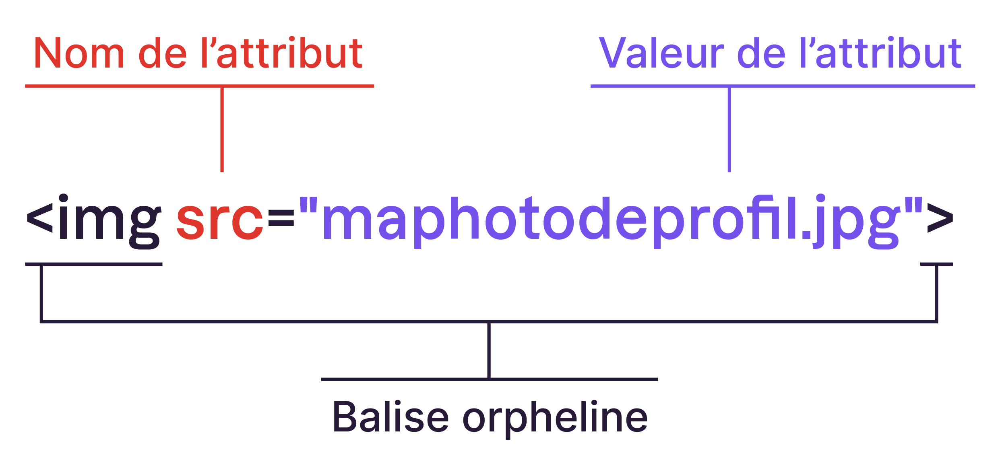

Créez des paragraphes avec les balises
Revenez à la ligne avec la balise orphelineUne nuance tout de même : abuser de ces balises n’aura pas l’effet escompté sur votre référencement. Si quasiment tout le texte est signalé comme étant important, rien en particulier ne va vraiment pouvoir "ressortir"… Pensez-y !
